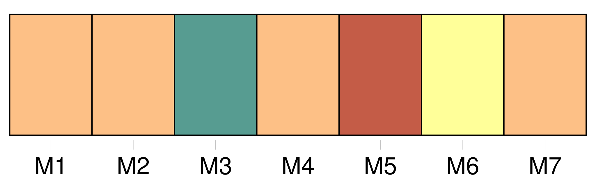
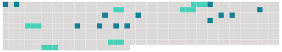

Longueur nb maillons : 19 mentions |
 |
[C'] était [Lui] déjà. [1 phrases] Voilà [M. Lelièvre] [qui] rentre. [2 phrases] Alors j'appelai : « Par ici, [mon cher] : nous avons eu un accident.
» [Il] demanda : « Quoi?? [2 phrases]
» J'étais resté tard à bavarder chez [vous] avec [votre] femme et notre ami qui m'avait amené dans sa voiture. [2 phrases] [Aidez] -moi donc à le faire descendre ; je le soignerai mieux chez lui.
» [5 phrases] « [Le mari inquiet] me demandait : « Croyez -vous que ce soit grave?? [1 phrases]
Elle avait passé son bras sous celui de [l'époux légitime] et elle plongeait son oeil fixe dans le fond obscur du coupé. |
 |
Il est possible de télécharger la ressource sur la page Ortolang |
Si vous avez des questions ou vous voyez des erreurs, merci d'envoyer un mail à silvia.federzoni89@gmail.com |